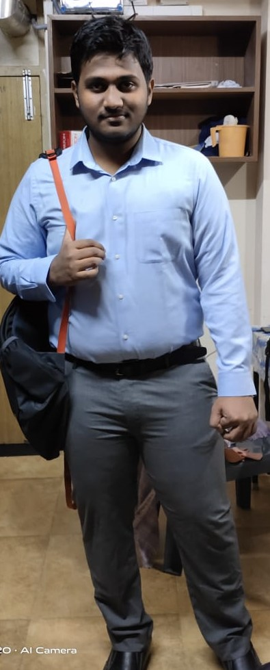

Hello, I'm
Ramith
Frontend Web Developer|Ml enthusiast|Competitive Programmer

I am PreFinal year Undergraduate at VIT Vellore in field of ComputerScience.I am front end web developer and a tech enthusiast. The reason why I chose Computer Science as my field of education for my Undergraduate Studies is because my passion towards programming and be part of updating world where technology is being as an apt substitue for all the requirements of person.Being in this field for past 3 years I have really learnt how technology can be applied in real life. This was driving force for enhancing my knowledge among the emergent domains like Artifical Intelligence ,Game Programming,Machine Learning.My approach of learning these subjects were different,instead of learning as subject. I adopted a methodology of building projects,stage by stage understanding and implementing the real application behind each concept lying in the subject. This process made me to evolve from b eginner to an intermediate level of comprehending the concepts present in this subject. My technical skills include expertise in programming languages Python,C++ and Java. I am also an active competitive programmer solving conceptual problems and learning Data Structures simultaneously. Practising these problems make me identify and rectify the mistake which I had committed.
Describing about my Technical Work being part of the clubs right from my first year of college I had experienced on sharing the technical platform with my seniors,club leads where I learnt the art of representing,guiding and sharing the knowledge with my community. The community here refers to my club members from where I had learnt technical stuff like Django,ReactJs frameworks by designing nd maintaining the front end of clubs website.Being a board member of the club we conducted hackathons,hosted webinars and I was also part of weekend lab sessions where I worked as mentor teaching the concepts of front end basics like HTML,CSS and also Javascript. I was named as Technical head of club in my Prefinal year where I had the responsibilty of conducting techincal events of club.I also had my Industrial Internship at Indian Servers- A software development company where I worked as Technical Intern and was given the work of developing Stock Price Predictor. This was designed using LSTM and RNN during my duration of 2 months. For further insights of my technical works kindly refer to my blog.
This project entails to take some existing music data and using this to train a model. The model learns the patterns in music that we humans enjoy Once the model learns this ,it is able to generate new music which is simply not just copy- paste from the training data.Since the music pattern is sequence of characters obvious choice would be RNN based architecture model.
See ProjectUsing Flask and twilio I had developed a whatsapp bot which could post the current statistics of active cases ,deaths recorded and also the count of the recovered people in a country.actual chatbot logic, I used a simple, yet surprisingly effective approach. The approach is to search in the incoming messages for the keywords A,B,C so on… and handle the query based on the request of the User.
See Project
This project was developed using OpenCv,Keras and Deep Learning to develop a model to detect face mask in static images. The dataset was divided into two sets one being with mask and other without mask.Here given a static image the model was able to predict with 93% accuracy for with mask and without mask with 88%.This project is now being extended to detection of face mask in real time video streams.
See ProjectThe project has been developed using OpenCv and GUI was designed using tkinter.The application was bulit to act as substitue to biometric systems during the covid Time.For elaborated explaination on working of the project please refer to my github repositry.
See Project
I attempt to construct a RNN (the LSTM in particular) for predicting stock market returns. The prediction is made on S&P500 index, which is one of the most widely used indices for trading and benchmarking stock market returns.The project goes through following steps: Data pre-processing and feature scaling, Building RNN, LSTM training and demonstration of results.
See ProjectA simple platformer arcade game developed using Unity and Android Studio.Presented by team Theomegawolf. Do try it out and check for the instruction manual in the Github repositry.The game is available in playstore https://play.google.com/store/apps/details?id=com.
See Project
Social Media
Connect With Me
LinkedIn
Github
Youtube
Facebook